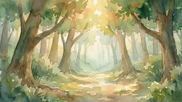

Nature Seed Disegna un percorso. Riuniscili.
Un puzzle fisico gratuito in cui si disegna per risolvere, da giocare nel browser. Traccia una linea con inchiostro limitato e diventa una rampa, un ponte o un punto di raccolta che porta Water Drop fino a Seed. Ogni livello risolto ripristina una scena di foresta ad acquerello.
Uscito il 18 settembre 2026 con 100 livelli, stelle di efficienza delle linee e progressi salvati. È gratis su itch.io, Game Jolt e indiexpo; la versione iOS e Android è l'obiettivo e non è ancora negli app store.
Disegnadisegna con inchiostro limitato
Connettiporta Water Drop a Seed
Fioriturariporta in vita la foresta
All'interno della build attuale
Ciò che disegni diventa parte del livello.
Ogni tratto che confermi diventa un oggetto solido con collisioni reali, e Water Drop e Seed reagiscono. Inchiostro e numero di linee sono entrambi limitati, quindi la forma della linea conta.
Stato del rilascio Uscito il 18 settembre 2026

Panoramica del gioco
Un rilassante puzzle in cui si disegna per risolvere, per far incontrare due piccoli personaggi.
L'idea
Disegna un percorso, riunisci Water Drop e Seed e guarda lo schizzo silenzioso tornare in vita.
Build di lancio
100 livelli giocabili con disegno al tocco, stelle per l'efficienza delle linee e progressi salvati tra una sessione e l'altra.
Pubblico
Giocatori a cui piacciono i puzzle tranquilli, la fisica leggera, i temi naturali e le sessioni mobile senza stress.
Stato
Uscito il 18 settembre 2026 e gratuito da giocare nel browser. Una versione mobile è l'obiettivo; non è ancora negli app store.
Caratteristiche
Cosa fai in Nature Seed.
Percorsi fisici da disegnare per risolvere
Ogni puzzle parte da un terreno, Seed e Water Drop. Il tratto del giocatore diventa la rampa, il ponte o il punto di raccolta che li unisce.
Feedback fisico chiaro
Water Drop e Seed si muovono in modi che puoi seguire, così un tentativo fallito ti mostra cosa cambiare.
Premi per il ripristino delle foreste
Completa un livello e la scena disegnata si riempie di colore e di alberi che crescono.
Livelli brevi, disegno con il tocco
I livelli sono brevi e si disegna con il tocco, ideale per sessioni veloci sul telefono.
Ciclo di gioco
Come giocare a Nature Seed
- Passaggio 01Leggi lo schizzo
Cerca pendii, vuoti e ostacoli, e il modo più sicuro per collegare entrambi i personaggi.
- Passaggio 02Traccia la linea
Disegna la tua linea. Il tratto diventa una rampa, una guida o un punto di raccolta per i personaggi.
- Passaggio 03Conferma e osserva
Conferma la linea e guarda i personaggi reagire. Vedi subito cosa ha funzionato e cosa no.
- Passaggio 04Fiorisci o perfeziona
Se Water Drop raggiunge Seed, la foresta torna. Se non si incontrano, ridisegna con ciò che hai appena imparato.
Storia/mondo
Una foresta disegnata aspetta l'acqua.
Nature Seed è nato come puzzle fisico in cui si disegna per risolvere, sul ripristinare qualcosa di fragile anziché spingere oggetti insieme.
Il cast è formato da Seed, Water Drop e una foresta che torna dallo schizzo al colore mentre giochi. Ogni puzzle è un piccolo compito: studiare il terreno, disegnare un percorso e aiutare l'acqua a raggiungere qualcosa che può crescere.
- Direzione del design
- Fisica calma e restauro visibile
- Personaggi
- Water Drop e Seed
- Interazione
- Disegno al tocco
- Ricompensa per la maestria
- Una soluzione con una sola linea ottiene tre stelle
In breve
Gratis nel browser oggi, con il mobile come obiettivo.
Hai inchiostro limitato e un numero limitato di linee. Usali per portare Water Drop fino a Seed, poi rigioca il livello e riduci la soluzione a una sola linea per ottenere tre stelle.
- Genere
- Puzzle fisico da disegnare e risolvere
- Piattaforma di destinazione
- iOS/Android
- Forma della sessione
- Livelli brevi e rilassanti
Scarica risorse
Nature Seed: risorse per la stampa e i creatori
Anteprime WebP per la copertura stampa, la valutazione degli editori e i riferimenti per le pagine store. I file sorgente a piena risoluzione sono disponibili su richiesta.
Marchio e personaggi
 Water DropIl personaggio blu che deve raggiungere Seed.
Water DropIl personaggio blu che deve raggiungere Seed.
 Personaggio SeedIl personaggio verde che Water Drop cerca di raggiungere.
Personaggio SeedIl personaggio verde che Water Drop cerca di raggiungere.
 Crescita dell'alberoL'albero che cresce dopo una soluzione.
Crescita dell'alberoL'albero che cresce dopo una soluzione.
 Menù del boscoSfondo del menu principale.
Menù del boscoSfondo del menu principale.
 Sfondo del giocoSfondo del livello con un'area di gioco vuota.
Sfondo del giocoSfondo del livello con un'area di gioco vuota.
Livelli di schizzo da disegnare per risolvere
 Schizzo livello 01Schizzo prima della soluzione.
Schizzo livello 01Schizzo prima della soluzione.
 Schizzo livello 02Schizzo prima della soluzione.
Schizzo livello 02Schizzo prima della soluzione.
 Schizzo livello 03Schizzo prima della soluzione.
Schizzo livello 03Schizzo prima della soluzione.
 Schizzo livello 04Schizzo prima della soluzione.
Schizzo livello 04Schizzo prima della soluzione.
 Schizzo livello 05Schizzo prima della soluzione.
Schizzo livello 05Schizzo prima della soluzione.
 Schizzo livello 06Schizzo prima della soluzione.
Schizzo livello 06Schizzo prima della soluzione.
 Schizzo livello 07Schizzo prima della soluzione.
Schizzo livello 07Schizzo prima della soluzione.
 Schizzo livello 08Schizzo prima della soluzione.
Schizzo livello 08Schizzo prima della soluzione.
 Schizzo livello 09Schizzo prima della soluzione.
Schizzo livello 09Schizzo prima della soluzione.
 Schizzo livello 10Schizzo prima della soluzione.
Schizzo livello 10Schizzo prima della soluzione.
Scene del puzzle restaurate
 Livello 01 ripristinatoRipristinato dopo la soluzione.
Livello 01 ripristinatoRipristinato dopo la soluzione.
 Livello 02 ripristinatoRipristinato dopo la soluzione.
Livello 02 ripristinatoRipristinato dopo la soluzione.
 Livello 03 ripristinatoRipristinato dopo la soluzione.
Livello 03 ripristinatoRipristinato dopo la soluzione.


Livello 04 ripristinatoRipristinato dopo la soluzione. Livello 05 ripristinatoRipristinato dopo la soluzione.
Livello 05 ripristinatoRipristinato dopo la soluzione.
 Livello 06 ripristinatoRipristinato dopo la soluzione.
Livello 06 ripristinatoRipristinato dopo la soluzione.
 Livello 07 ripristinatoRipristinato dopo la soluzione.
Livello 07 ripristinatoRipristinato dopo la soluzione.
 Livello 08 ripristinatoRipristinato dopo la soluzione.
Livello 08 ripristinatoRipristinato dopo la soluzione.
 Livello 09 ripristinatoRipristinato dopo la soluzione.
Livello 09 ripristinatoRipristinato dopo la soluzione.
 Livello 10 ripristinatoRipristinato dopo la soluzione.
Livello 10 ripristinatoRipristinato dopo la soluzione.
Cronologia dello sviluppo
Cronologia dello sviluppo di Nature Seed
- Estate 2025Concetto originale
Nature Seed è nato come idea di un tranquillo puzzle mobile sul legame e sul ripristino della natura.
- ottobre 2025Identità Seed e Water Drop
Abbiamo concluso il documento di design e scelto Seed e Water Drop come personaggi principali.
- dicembre 2025Inizia lo sviluppo
Abbiamo pianificato i primi livelli su carta, poi abbiamo iniziato a costruire e i sistemi principali sono diventati giocabili.
- febbraio 2026Grande passata di livelli in bozza
Un grande primo passaggio grezzo sui livelli ci ha dato una base per rifiniture e bilanciamenti successivi.
- marzo-aprile 2026Meccanica e revisione dei livelli
Abbiamo riesaminato le meccaniche extra e i livelli in bozza, poi li abbiamo semplificati o rielaborati per mantenere il gioco tranquillo.
- luglio 2026Revisione del prototipo verticale
La build di luglio ha riunito in un unico ciclo giocabile il disegno con inchiostro limitato, le stelle di efficienza, i progressi salvati e una generazione stabile delle linee.
- 18 settembre 2026Uscita di Nature Seed
Il gioco è uscito come Nature Seed con 100 livelli, stelle di efficienza delle linee, progressi salvati e scene di ripristino ad acquerello.
Domande frequenti su Nature Seed
Domande frequenti su Nature Seed
Nature Seed è gratis?
Sì. Puoi giocarci gratis nel browser su itch.io, Game Jolt e indiexpo.
Nature Seed è già uscito?
Sì. È uscito il 18 settembre 2026 con 100 livelli. La versione iOS e Android è la piattaforma di destinazione e non è ancora negli app store.
Che tipo di gioco è Nature Seed?
Un rilassante puzzle fisico in cui si disegna per risolvere. Le linee che tracci diventano oggetti solidi che aiutano Water Drop e Seed a incontrarsi.
Come si gioca a Nature Seed?
Leggi il terreno, disegna un percorso con il tuo inchiostro limitato e guarda entrambi i personaggi reagire. Se si mancano, ridisegna. Meno linee fanno guadagnare più stelle, e una sola linea ne vale tre.
Chi crea Nature Seed?
WillowinWorlds, uno studio indipendente che crea giochi mobile di puzzle e arcade.
Posso usare le risorse per la stampa di Nature Seed?
Sì, per la stampa, la valutazione degli editori e i riferimenti per gli store. I file sorgente restano privati a meno che tu non ce li chieda.
Nature Seed Devlog
Cosa è cambiato e quando
- Uscita di Nature Seed
Nature Seed è uscito con il titolo definitivo come gioco browser gratuito su itch.io, Game Jolt e indiexpo, con 100 livelli, stelle di efficienza delle linee e progressi salvati.
- Ripristino e passaggio di stabilità del livello 2
Il livello 2 ora utilizza la coppia di sfondi di produzione, con configurazione del livello, controlli di collisione e feedback di completamento più affidabili.
- luglio 2026Build giocabile
La build di luglio combinava il disegno di linee con inchiostro limitato, le stelle di efficienza, i progressi salvati e il feedback di ripristino.
- aprile 2026Revisione e rielaborazione dei livelli
Dopo una revisione interna abbiamo rielaborato diversi livelli in bozza per ridurre la complessità e renderli più leggibili su un telefono.
- marzo 2026Revisione delle meccaniche
Abbiamo testato meccaniche extra e rimosso quelle che facevano sembrare i livelli affollati.
- febbraio 2026Grande passata di livelli in bozza
Un grande primo passaggio grezzo sui livelli è diventato la base per rifiniture e bilanciamenti successivi.
- dicembre 2025Inizia lo sviluppo
I sistemi principali sono passati dal documento di design a una forma giocabile.
- Estate 2025Concetto originale
La prima versione di Nature Seed era l'idea di un tranquillo puzzle sul legame e sul ripristino della natura.